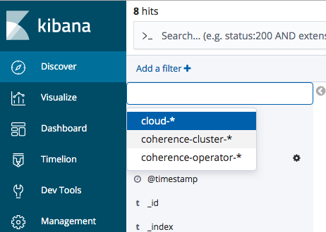

Configure Custom Logger and View in Kibana
The Coherence Operator manages data logging through the Elasticsearch, Fluentd, and Kibana (EFK) stack.
This sample shows how to:
* Configure your own application logger named cloud
* Capture the logs through Fluentd
* Pass the logs into Elasticsearch
* Display the logs in Kibana
A server-side Interceptor updates values to upper case and writes log messages to the cloud logger.
Return to Logging samples / Return to Coherence Operator samples / Return to samples
Sample files
-
src/main/docker/Dockerfile - Dockerfile for creating side-car image from which configuration and server side JARs are read from at pod startup.
-
src/main/resources/conf/custom-logging.properties - Custom
logging.propertiesfile withcloudlogger. -
src/main/resources/conf/fluentd-cloud.conf - Fluentd configuration for
cloudlogger. -
src/main/java/com/oracle/coherence/examples/CustomFileHandler.java - Logger for custom
samplelogger. -
src/main/java/com/oracle/coherence/examples/UppercaseLoggingInterceptor.java - Interceptor to update values to upper case and use custom logger.
Prerequisites
Ensure you have already installed the Coherence Operator with --set logCaptureEnabled=true using the instructions here.
Installation Steps
- Change to the
samples/operator/logging/custom-logsdirectory and ensure you have your Maven build environment set for JDK 8 and build the project:
bash
mvn clean install -P docker
The Docker image is built with the cache and logging configuration, and compiled Java classes.
Note: If you are using a remote Kubernetes cluster, you need to push the built Docker image to your repository accessible to that cluster. Also, you need to prefix the image name in the
helm installcommand.
- Install the Coherence cluster
The following additional options are required:
-
--set logCaptureEnabled=true- Enables log catpure. -
--set userArtifacts.image=custom-logger-sample:1.0.0-SNAPSHOT- Sets custom image with configuration and classes. If you are using a remote Kubernetes cluster, the value of this option must be the Docker image that can be pulled by the cluster. For example,mydockerid/custom-logger-samples:1.0.0-SNAPSHOT. -
--set store.logging.configFile=custom-logging.properties- Configures custom logger. -
--set fluentd.application.configFile=/conf/fluentd-cloud.conf- Includes customfluentd.confforcloudlogger. -
--set fluentd.application.tag=cloud- Sets the Fluentd application tag.
bash
$ helm install \
--namespace sample-coherence-ns \
--name storage \
--set clusterSize=3 \
--set cluster=custom-logger-cluster \
--set imagePullSecrets=sample-coherence-secret \
--set store.cacheConfig=storage-cache-config.xml \
--set prometheusoperator.enabled=false \
--set logCaptureEnabled=true \
--set userArtifacts.image=custom-logger-sample:1.0.0-SNAPSHOT \
--set store.logging.configFile=custom-logging.properties \
--set fluentd.application.configFile=/conf/fluentd-cloud.conf \
--set fluentd.application.tag=cloud \
coherence/coherence
After the installation completes, list the pods:
bash
$ kubectl get pods -n sample-coherence-ns
console
NAME READY STATUS RESTARTS AGE
coherence-operator-7f596c6796-9v5m4 2/2 Running 0 58m
elasticsearch-5b5474865c-glrl8 1/1 Running 0 58m
kibana-f6955c4b9-f959q 1/1 Running 0 58m
storage-coherence-0 2/2 Running 0 2m
storage-coherence-1 2/2 Running 0 1m
storage-coherence-2 2/2 Running 0 1m
Ensure that all pods (storage-coherence-0/1/2) are running and ready.
- Port forward the Coherence proxy port on the
storage-coherence-0pod.
bash
$ kubectl port-forward -n sample-coherence-ns storage-coherence-0 20000:20000
- Connect through CohQL and execute the following command:
bash
$ mvn exec:java
Use the following CohQL commands to insert data into the cluster:
sql
insert into 'test' key('key-1') value('value-1');
insert into 'test' key('key-2') value('value-2');
insert into 'test' key('key-3') value('value-3');
insert into 'test' key('key-4') value('value-4');
Verify the data:
sql
select key(), value() from 'test';
Results
["key-4", "VALUE-4"]
["key-2", "VALUE-2"]
["key-1", "VALUE-1"]
["key-3", "VALUE-3"]
From the ouput, you can observe that the server side interceptor has changed the value to uppercase.
- Confirm that the log message can be viewed:
bash
$ kubectl exec -it storage-coherence-0 -n sample-coherence-ns -c coherence -- bash -c 'cat /logs/cloud*.log'
console
2019-04-29 04:45:03 Cloud 1.0 <INFO> (cluster=custom-logger-cluster, member=storage-coherence-0, thread=PartitionedCacheWorker:0x0000:5): Before, key=key-4, value=value-4
2019-04-29 04:45:03 Cloud 1.0 <INFO> (cluster=custom-logger-cluster, member=storage-coherence-0, thread=PartitionedCacheWorker:0x0000:5): Changed key=key-4 to value=VALUE-4
Note: Depending upon the data distribution, not all members show the messages.
Verify Kibana Logs
- Access Kibana
Access Kibana using the instructions here.
-
Create an Index Pattern
-
In Kibana, open Management and click Index Patterns.
-
Click Create index pattern.
-
Set the name to
cloud-*. This will show that this matches 1 index, such ascloud-2019.04.29. -
Click Next Step and select
@timestampin the Time Filter field name drop-down menu and click Create index pattern.
Note: It takes approximately 5 minutes for the data to reach the Elasticsearch instance.
-
View data from the
cloud-*index pattern -
Open Discover and select
cloud-*in the drop-down list which showscoherence-cluster-*.
-
When you click Refresh, you can see the data from the custom logger.
Uninstall the Charts
To delete chart installed in this sample, use the following command:
$ helm delete storage --purge
Note: If you are using Kubernetes version 1.13.0 or oler version, then you cannot delete the pods. This is a known issue and you need to add the options
--force --grace-period=0to force delete the pods.Refer to https://github.com/kubernetes/kubernetes/issues/45688.
Before starting another sample, ensure that all the pods are removed from previous sample.
If you want to remove the coherence-operator, then use the helm delete command.